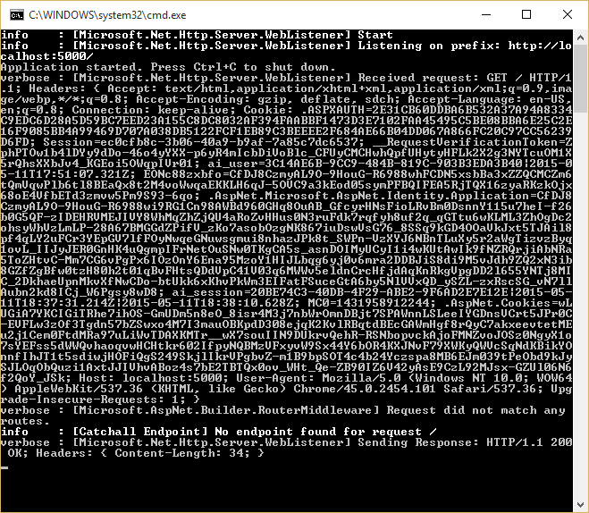
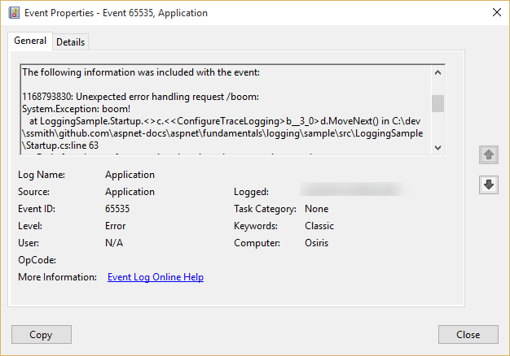

Logging¶
By Steve Smith
ASP.NET 5 has built-in support for logging, and allows developers to easily leverage their preferred logging framework’s functionality as well. Implementing logging in your application requires a minimal amount of setup code. Once this is in place, logging can be added wherever it is desired.
View or download sample from GitHub.
Implementing Logging in your Application¶
Adding logging to a component in your application is done by requesting either an ILoggerFactory or an ILogger<T> via |stub-icon| Dependency Injection. If an ILoggerFactory is requested, a logger must be created using its CreateLogger method. The following example shows how to do this within the Configure method in the Startup class:
1 2 3 4 5 6 7 8 9 10 11 12 13 14 15 16 17 | public void Configure(IApplicationBuilder app,
IHostingEnvironment env,
ILoggerFactory loggerFactory)
{
loggerFactory.AddConsole(minLevel:LogLevel.Verbose);
app.UseStaticFiles();
app.UseMvc();
// Create a catch-all response
app.Run(async (context) =>
{
var logger = loggerFactory.CreateLogger("Catchall Endpoint");
logger.LogInformation("No endpoint found for request {path}", context.Request.Path);
await context.Response.WriteAsync("No endpoint found - try /api/todo.");
});
|
When a logger is created, a category name must be provided. The category name specifies the source of the logging events. By convention this string is hierarchical, with categories separated by dot (.) characters. Some logging providers have filtering support that leverages this convention, making it easier to locate logging output of interest. In the above example, the logging is configured to use the built-in ConsoleLogger (see Configuring Logging in your Application below). To see the console logger in action, run the sample application using the web command, and make a request to configured URL (localhost:5000). You should see output similar to the following:
You may see more than one log statement per web request you make in your browser, since most browsers will make multiple requests (i.e. for the favicon file) when attempting to load a page. Note that the console logger displayed the log level (info in the image above) followed by the category ([Catchall Endpoint]), and then the message that was logged.
The call to the log method can utilize a format string with named placeholders (like {path}). These placeholders are populated in the order in which they appear by the args values passed into the method call. Some logging providers will store these names along with their mapped values in a dictionary that can later be queried. In the example below, the request path is passed in as a named placeholder:
1 | var logger = loggerFactory.CreateLogger("Catchall Endpoint");
|
In your real world applications, you will want to add logging based on application-level, not framework-level, events. For instance, if you have created a Web API application for managing To-Do Items (see Building Your First Web API with MVC 6), you might add logging around the various operations that can be performed on these items.
The logic for the API is contained within the TodoController, which uses |stub-icon| Dependency Injection to request the services it requires via its constructor. Ideally, classes should follow this example and use their constructor to define their dependencies explicitly as parameters. Rather than requesting an ILoggerFactory and creating an instance of ILogger explicitly, TodoController demonstrates another way to work with loggers in your application - you can request an ILogger<T> (where T is the class requesting the logger).
1 2 3 4 5 6 7 8 9 10 11 12 13 14 15 16 17 18 19 20 | [Route("api/[controller]")]
public class TodoController : Controller
{
private readonly ITodoRepository _todoRepository;
private readonly ILogger<TodoController> _logger;
public TodoController(ITodoRepository todoRepository,
ILogger<TodoController> logger)
{
_todoRepository = todoRepository;
_logger = logger;
}
[HttpGet]
public IEnumerable<TodoItem> GetAll()
{
_logger.LogInformation(LoggingEvents.LIST_ITEMS, "Listing all items");
EnsureItems();
return _todoRepository.GetAll();
}
|
Within each controller action, logging is done through the use of the local field, _logger, as shown on line 17, above. This technique is not limited to controllers, but can be utilized by any of your application services that utilize |stub-icon| Dependency Injection.
Working with ILogger<T>¶
As we have just seen, your application can request an instance of ILogger<T> as a dependency in a class’s constructor, where T is the type performing logging. The TodoController shows an example of this approach. When this technique is used, the logger will automatically use the type’s name as its category name. By requesting an instance of ILogger<T>, your class doesn’t need to create an instance of a logger via ILoggerFactory. You can use this approach anywhere you don’t need the additional functionality offered by ILoggerFactory.
Logging Verbosity Levels¶
When adding logging statements to your application, you must specify a LogLevel. The LogLevel allows you to control the verbosity of the logging output from your application, as well as the ability to pipe different kinds of log messages to different loggers. For example, you may wish to log debug messages to a local file, but log errors to the machine’s event log or a database.
ASP.NET 5 defines six levels of logging verbosity:
- Debug
- Used for the most detailed log messages, typically only valuable to a developer debugging an issue. These messages may contain sensitive application data and so should not be enabled in a production environment. Disabled by default. Example:
Credentials: {"User":"someuser", "Password":"P@ssword"} - Verbose
- These messages have short-term usefulness during development. They contain information that may be useful for debugging, but have no long-term value. This is the default most verbose level of logging. Example:
Entering method Configure with flag set to true - Information
- These messages are used to track the general flow of the application. These logs should have some long term value, as opposed to
Verboselevel messages, which do not. Example:Request received for path /foo - Warning
- The Warning level should be used for abnormal or unexpected events in the application flow. These may include errors or other conditions that do not cause the application to stop, but which may need to be investigated in the future. Handled exceptions are a common place to use the Warning log level. Examples:
Login failed for IP 127.0.0.1orFileNotFoundException for file foo.txt - Error
- An error should be logged when the current flow of the application must stop due to some failure, such as an exception that cannot be handled or recovered from. These messages should indicate a failure in the current activity or operation (such as the current HTTP request), not an application-wide failure. Example:
Cannot insert record due to duplicate key violation - Critical
- A critical log level should be reserved for unrecoverable application or system crashes, or catastrophic failure that requires immediate attention. Examples: data loss scenarios, stack overflows, out of disk space
The Logging package provides helper extension methods for each of these standard LogLevel values, allowing you to call LogInformation rather than the more verbose Log(LogLevel.Information, ...) method. Each of the LogLevel-specific extension methods has several overloads, allowing you to pass in some or all of the following parameters:
- string data
- The message to log.
- int eventId
- A numeric id to associate with the log, which can be used to associate a series of logged events with one another. Event IDs should be static and specific to a particular kind of event that is being logged. For instance, you might associate adding an item to a shopping cart as event id 1000 and completing a purchase as event id 1001. This allows intelligent filtering and processing of log statements.
- string format
- A format string for the log message.
- object[] args
- An array of objects to format.
- Exception error
- An exception instance to log.
Note
Some loggers, such as the built-in ConsoleLogger used in this article, will ignore the eventId parameter. If you need to display it, you can include it in the message string. This is done in the following sample so you can easily see the eventId associated with each message, but in practice you would not typically include it in the log message.
In the TodoController example, event id constants are defined for each event, and log statements are configured at the appropriate verbosity level based on the success of the operation. In this case, successful operations log as Information and not found results are logged as Warning (error handling is not shown).
1 2 3 4 5 6 7 8 9 10 11 12 13 14 15 16 17 18 19 20 | [HttpGet]
public IEnumerable<TodoItem> GetAll()
{
_logger.LogInformation(LoggingEvents.LIST_ITEMS, "Listing all items");
EnsureItems();
return _todoRepository.GetAll();
}
[HttpGet("{id}", Name = "GetTodo")]
public IActionResult GetById(string id)
{
_logger.LogInformation(LoggingEvents.GET_ITEM, "Getting item {0}", id);
var item = _todoRepository.Find(id);
if (item == null)
{
_logger.LogWarning(LoggingEvents.GET_ITEM_NOTFOUND, "GetById({0}) NOT FOUND", id);
return HttpNotFound();
}
return new ObjectResult(item);
}
|
Note
It is recommended that you perform application logging at the level of your application and its APIs, not at the level of the framework. The framework already has logging built in which can be enabled simply by setting the appropriate logging verbosity level.
To see more detailed logging at the framework level, you can adjust the LogLevel specified to your logging provider to something more verbose (like Debug or Verbose). For example, if modify the AddConsole call in the Configure method to use LogLevel.Verbose and run the application, the result shows much framework-level detail about the request:
The console logger prefixes verbose output with “verbose: ” and uses a gray font to make it easier to distinguish it from other levels of log output.
Scopes¶
In the course of logging information within your application, you can group a set of logical operations within a scope. A scope is an IDisposable type returned by calling the BeginScopeImpl method, which lasts from the moment it is created until it is disposed. Not all loggers support scopes. For example, the ConsoleLogger simply returns null from BeginScopeImpl. The built-in TraceSource logger returns a scope instance that is responsible for starting and stopping tracing operations. Any logging state, such as a transaction id, is attached to the scope when it is created.
Scopes are not required, and should be used sparingly, if at all. They’re best used for operations that have a distinct beginning and end, such as a transaction involving multiple resources.
Configuring Logging in your Application¶
To configure logging in your ASP.NET application, you should resolve ILoggerFactory in the Configure method in your Startup class. ASP.NET will automatically provide an instance of ILoggerFactory using |stub-icon| Dependency Injection when you add a parameter of this type to the Configure method. Once you’ve added ILoggerFactory as a parameter, you configure loggers within the Configure method by calling methods (or extension methods) on the logger factory. We have already seen an example of this configuration at the beginning of this article, when we added console logging by simply calling loggerFactory.AddConsole. In addition to adding loggers, you can also control the verbosity of the application’s logging by setting the MinimumLevel property on the logger factory. The default verbosity is Verbose.
Note
You can specify the minimum logging level each logger provider will use as well. For example, the AddConsole extension method supports an optional parameter for setting its minimum LogLevel.
Configuring TraceSource Logging¶
The built-in TraceSourceLogger provides a simple way to configure log messages to use the existing System.Diagnostics.TraceSource libraries and providers, including easy access to the Windows event log. This proven means of routing messages to a variety of listeners is already in use by many organizations, and the TraceSourceLogger allows developers to continue leveraging this existing investment.
First, be sure to add the Microsoft.Framework.Logging.TraceSource package to your project (in project.json):
1 2 3 4 5 6 7 8 | "dependencies": {
"Microsoft.AspNet.Mvc": "6.0.0-beta8",
"Microsoft.AspNet.Server.WebListener": "1.0.0-beta8",
"Microsoft.AspNet.StaticFiles": "1.0.0-beta8",
"Microsoft.Framework.Logging": "1.0.0-beta8",
"Microsoft.Framework.Logging.Console": "1.0.0-beta8",
"Microsoft.Framework.Logging.TraceSource": "1.0.0-beta8"
},
|
The following example demonstrates how to configure two separate TraceSourceLogger instances for an application, both logging only Critical messages. Each call to AddTraceSource takes a TraceListener. The first call configures a ConsoleTraceListener; the second one configures an EventLogTraceListener to write to the Application event log. These two listeners are not available in DNX Core, so their configuration is wrapped in a conditional compilation statement (#if DNX451).
1 2 3 4 5 6 7 8 9 | loggerFactory.MinimumLevel = LogLevel.Debug;
#if DNX451
var sourceSwitch = new SourceSwitch("LoggingSample");
sourceSwitch.Level = SourceLevels.Critical;
loggerFactory.AddTraceSource(sourceSwitch,
new ConsoleTraceListener(false));
loggerFactory.AddTraceSource(sourceSwitch,
new EventLogTraceListener("Application"));
#endif
|
The sample above also demonstrates setting the MinimumLevel on the logger factory. However, this specified level is simply the default for new factories, but can still be overridden by individually configured loggers. In this case, the sourceSwitch is configured to use SourceLevels.Critical, so only Critical log messages are picked up by the two TraceListener instances.
To test out this code, replace the catch-all response with the following app.Run block:
app.Run(async context =>
{
if (context.Request.Path.Value.Contains("boom"))
{
throw new Exception("boom!");
}
await context.Response.WriteAsync("Hello World!");
});
With this change in place, when the application is run (on Windows), and a request is made to http://localhost:5000/boom, the following is shown in the console output:
Examining the Application event log in the Windows Event Viewer, the following event has also been logged as a result of this request:
In addition to working with TraceSourceLogger, you can also log directly to the event log using the EventLog logging provider. Support for logging using System.Diagnostics.Debug.WriteLine is also available using the Debug logging provider, the output of which can be seen in Visual Studio’s Output window.
Configuring Other Providers¶
In addition to the built-in loggers, you can configure logging to use other providers. Add the appropriate package to your project.json file, and then configure it just like any other provider. Typically, these packages should include extension methods on ILoggerFactory to make it easy to add them.
Note
The ASP.NET team is still working with third party logging providers to publish support for this logging model. Once these ship, we will include links to them here.
You can create your own custom providers as well, to support other logging frameworks or your own internal logging requirements.
Logging Recommendations¶
The following are some recommendations you may find helpful when implementing logging in your ASP.NET applications.
- Log using the correct
LogLevel. This will allow you to consume and route logging output appropriately based on the importance of the messages. - Log information that will enable errors to be identified quickly. Avoid logging irrelevant or redundant information.
- Keep log messages concise without sacrificing important information.
- Although loggers will not log if disabled, consider adding code guards around logging methods to prevent extra method calls and log message setup overhead, especially within loops and performance critical methods.
- Name your loggers with a distinct prefix so they can easily be filtered or disabled. Remember the
Create<T>extension will create loggers named with the full name of the class. - Use Scopes sparingly, and only for actions with a bounded start and end. For example, the framework provides a scope around MVC actions. Avoid nesting many scopes within one another.
- Application logging code should be related to the business concerns of the application. Increase the logging verbosity to reveal additional framework-related concerns, rather than implementing yourself.
Summary¶
ASP.NET provides built-in support for logging, which can easily be configured within the Startup class and used throughout the application. Logging verbosity can be configured globally and per logging provider to ensure actionable information is logged appropriately. Built-in providers for console and trace source logging are included in the framework; other logging frameworks can easily be configured as well.